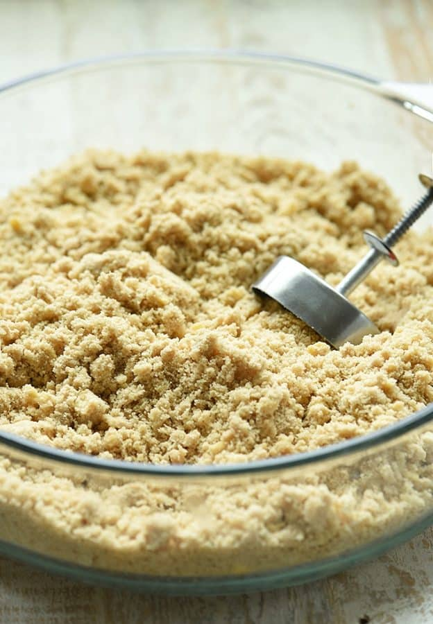

History
Polvoron is mostly produced in Spain and Latin America, this delicacy originated from the Iberian Peninsula. But its a popular dessert in the Philippines, polvoron or polboron is made out of toasted flour, milk powder, sugar, and butter. Polvo means “powdered” in English, since the delicacy is a form of a hardened powde. There are many varieties of the polvorón and it comes in a wide array of flavors–pinipig (rice krispies), cashew, ube (purple yam), cookies-and-cream, and many more.

Make One
Ingredients
- 2 cups flour
- 1 cup full cream milk
- 1 cup sugar
- 1 cup butter, melted
- For the Pinipig Flavor
- 1/2 cup pinipig
- For the Cashew or Peanut Flavor
- 1/2 cup unsalted cashew or peanut
- For the Cookies and Cream Flavor
- 6 Oreo cookies
- 1 tablespoon butter, melted
Procedure
- In a skillet over medium heat, add flour. Toast, stirring regularly, until lightly browned and aromatic. Remove from heat and allow to cool.
- In a bowl, whisk together toasted flour, powdered milk, and sugar until well-combined. Add butter and continue to stir until well-combined.
- Transfer mixture into a flat baking dish and using a polvoron mold, shape into solid cookies.
- Make sure mold is as compact as possible.
- Arrange in a single layer on a baking sheet and freeze until firm for about 30 minutes.
- Wrap individually in cellophane or Japanese paper wrappers.
- For the Pinipig Flavor
- In a skillet over medium heat, add pinipig. Toast, stirring regularly, until lightly browned and begins to pop. Remove from pan and allow to cool.
- In a food processor, process until coarsely ground.
- Add to polvoron mixture and whisk together until well-combined.
For the Cashew or Peanut Flavor
- In a skillet over medium heat, add cashews or peanuts. Toast, stirring regularly, until aromatic.
- Remove from pan and allow to cool.
- In a food processor, process until coarsely ground.
- Add to polvoron mixture and whisk together until well-combined.
For the Cookies and Cream Flavor
- Scrape off cream filling from cookies.
- In a food processor, process until coarsely ground.
- Add to polvoron mixture plus additional 1 tablespoon butter and whisk together until well-combined.